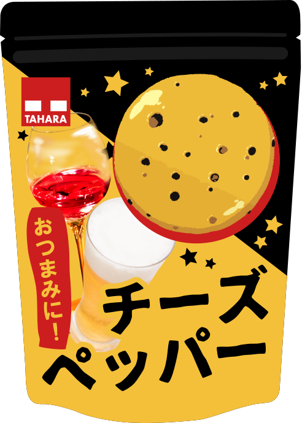

自主制作で、あったら良いなと思う架空のお菓子を考案し、パッケージをデザインしました。
チーズと胡椒を使った製品なので、おつまみに最適と考え、お酒の写真も載せました。
ワインの画像は最初は白ワインだったのですが、調べたところチーズには赤ワインが合うとのことだったので、パッケージに映えるということもあり、赤ワインに見えるように写真を加工しました。
主にコンビニに陳列されているイメージで、男女ともに手に取りやすく、親しみやすいパッケージを目指しました。
そしてお酒と言えば夜なので、夜空をモチーフにして、製品の画像を月に見立てています。
お菓子自体の画像と企業ロゴも自作しました。企業ロゴは製菓メーカーのイメージの強い赤色です。
IllustratorなどのAdobe製品が使えない環境だったので、無料ソフトで代用しました。
2019年5月
使用ソフト：Inkscape、MediBang Paint
お酒の写真素材：ぱくたそ様